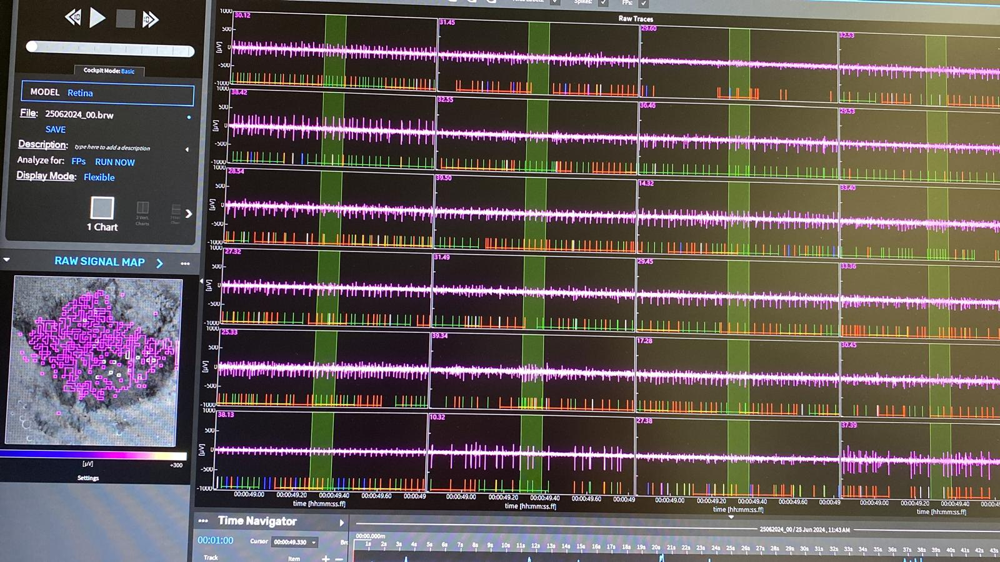

Establishing CMOS-MEA Recordings in Adult Zebrafish Retina
MASTER'S THESIS / 2024
Center for Regenerative Therapies Dresden (CRTD), Technische Universität Dresden, Germany.
My master's thesis focused on establishing extracellular electrophysiological recordings from isolated adult zebrafish retina using a high-density CMOS microelectrode array.
The aim was to develop a reliable experimental preparation for recording spontaneous and visually evoked retinal activity, and to use this preparation to investigate changes in neuronal responses under different experimental conditions.
CMOS-MEA Zebrafish Retina Ex Vivo Electrophysiology Python / REXPERIMENTAL SETUP
BIOLOGICAL PREPARATION
Isolated adult zebrafish retina, maintained under perfusion during electrophysiological recordings.
RECORDING PLATFORM
3Brain Accura CMOS-MEA with 4,096 electrodes arranged in a 64 × 64 array.
OPTIMIZATION
Retinal dissection, tissue orientation, tissue-electrode contact and recording conditions were evaluated to improve signal quality.
STIMULATION
Light stimulation protocols were used to investigate visually responsive neuronal activity across the retinal preparation.
EXPERIMENTAL CONDITIONS
BASELINE ACTIVITY
Spontaneous retinal activity was recorded and compared with activity during visual stimulation.
LIGHT RESPONSES
Responses to different light stimulation protocols were examined, including ON, OFF and ON-OFF activity patterns.
PHARMACOLOGY
Meclofenamic acid (MFA), a pharmacological inhibitor of gap-junction-mediated coupling, was applied to investigate how altered electrical coupling affects retinal network activity. MFA is not entirely selective for gap junctions.
RETINAL INJURY
Light-induced injury was used to explore how retinal activity changed following experimental damage.
FROM RAW SIGNALS TO NEURAL RESPONSES
Extracellular recordings were processed to characterize neuronal activity and evaluate changes between experimental conditions.
- Spike detection and spike sorting
- Mean firing rate and spike-count analysis
- Inter-spike interval distributions and variability
- Peristimulus time histograms (PSTHs)
- Classification of ON, OFF and ON-OFF responses
- Spatial visualization of activity across the array
- Statistical comparison of recording conditions
I used Python and R for data processing, visualization and statistical analysis.
MAIN FINDINGS
01 / Establishing the preparation
Improvements in tissue preparation and recording conditions enabled the detection of spontaneous and light-evoked retinal activity across the CMOS-MEA.
02 / Visual responses
Light stimulation produced distinguishable response patterns, including ON, OFF and ON-OFF activity. Firing-rate changes were used to evaluate responsiveness.
03 / Pharmacological modulation
MFA treatment reduced light-associated spiking activity, demonstrating that the preparation could be used to investigate pharmacological effects on retinal responses.
04 / Light-induced injury
Following light-induced injury, spontaneous activity increased at the later recording time point, while significant differences between baseline and light-stimulated activity were no longer detected.
RECORDING ARCHIVE
Selected visual material from the retinal electrophysiology project.

> project: CRTD_RETINA
> recording platform: CMOS-MEA / 4096 electrodes
> model: adult zebrafish retina
> analysis: Python / R
> archive status: available
> _